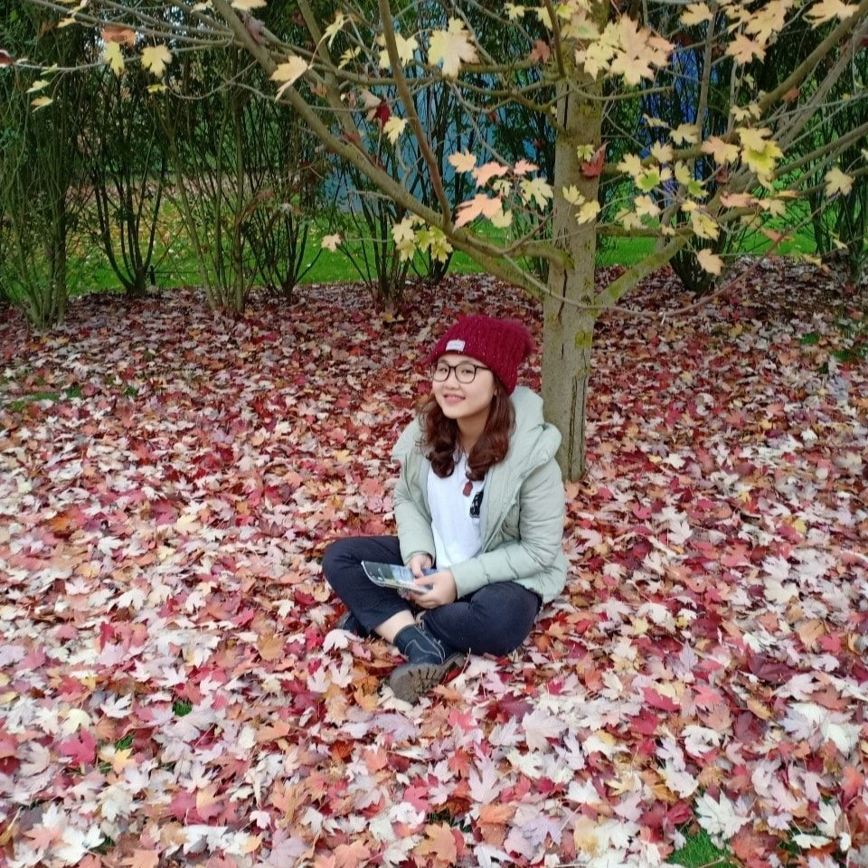

Je voudrais me présenter, je m'appelle Dung, je suis actuellement étudiante en quatrième année à l'INSA Centre Val de Loire spécialise Gestion de Systèmes Industriels, option Acquisition, Analyse et Décision (ACAD). Depuis que j'étais au lycée au Vietnam, je connaissais mes capacités et aimais particulièrement les matériel sciences comme les mathématiques, la physique et la programmation. Je me suis ensuite inscrite à un programme de coopération entre Vietnam et la France et recevoir la bourse pour venir ici. j'ai surmonté de nombreuses difficultés pour aller en France, où je pense m'ouvrira une porte complètement différente. Bien que j'ai reçu une bourse, je veux toujours vivre une vie colorée ici. Je me suis donc trouvé des emplois à temps partiel. Cela m'aide à la fois à acquérir de l'expérience dans la vie et à améliorer mon français. De plus pendant le temps libre J'apprends et me familiarise avec le Web sur des sites Internet comme Codecademy ou FreecodeCamp. Cependant, j'espère toujours apprendre plus méthodiquement dans un environnement de travail professionnel. C'est pourquoi je recherche un stage en entreprise. De plus, en tant que personnage, je suis une personne créative, je suis très attirée par les images et les choses qui font la différence. Quand je suis stressé, je dessin souvent à l'aquarelle. De plus, je suis méticuleuse prudente, patiente. Je peux m'asseoir pendant des heures à créer des cadeaux faits à la main pour les personnes que j'aime. Je cherche un stage (4 mois) dans le domaine de développement Web. Je suis dynamique, enthousiaste et curieuse. Je m’adapte rapidement à l’environnement d’étude ainsi qu’à l’environnement de travail. Je suis disponible au 06 Avril 2020 pour mon stage.
